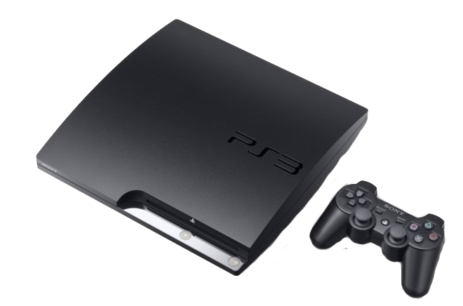

PlayStation 3
R$450
O PlayStation 3 (PS3) é um console de videogames desenvolvido pela Sony Computer Entertainment. É o
sucessor do PlayStation 2 e faz parte da marca PlayStation de consoles. Foi lançado em 11 de novembro
de 2006, no Japão,[6] 17 de novembro de 2006 na América do Norte e em 23 de março de 2007 na Europa
e Oceania. O PlayStation 3 competiu com o console Xbox 360 da Microsoft e o Wii da Nintendo como
parte da sétima geração de consoles de videogames.